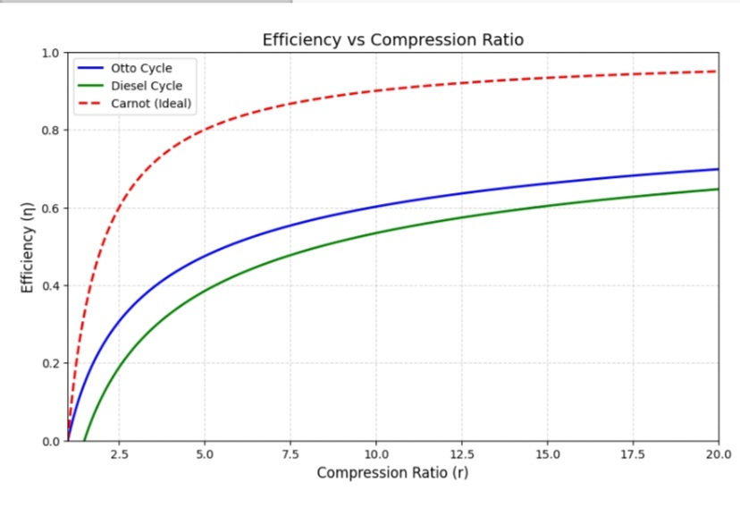
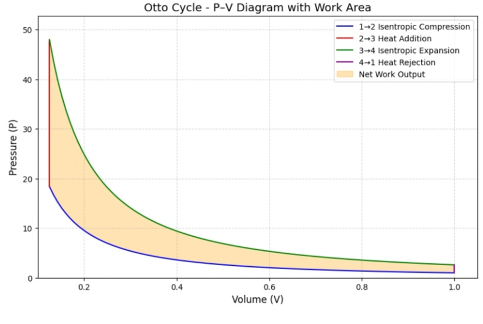

What if you could turn every bit of heat into useful work?
This simple yet profound question lies at the heart of thermodynamics. Whether you’re driving a car, flying a jet, or generating power in a steam turbine, the goal is the same : extract as much useful work as possible from a given amount of heat.
But how much is actually possible ?
This article explores that question using theoretical insights and simulations, walking through symbolic and numerical modeling of three fundamental heat engines — Carnot, Otto, and Diesel. You’ll also learn how to build your own simulator to explore the limits imposed by nature.
\[\Delta U = Q + W\]
Where :
\[\Delta S_{\text{universe}} \geq 0\]
In a heat engine :
This unavoidable loss limits the maximum efficiency of any real engine.
The Carnot cycle is the ideal, reversible heat engine. Its efficiency is given by :
\[\eta_{\text{Carnot}} = 1 - \frac{T_C}{T_H}\]
Where :
This equation defines the upper limit — no real engine can be more efficient due to irreversibilities.
In a Carnot engine :
Work done is :
\[W = Q_H - Q_C = \Delta S \cdot (T_H - T_C)\]
Entropy is conserved in this ideal case : there’s no net generation.
\[\eta_{\text{Otto}} = 1 - \frac{1}{r^{\gamma - 1}}\]
Where :
Plotting efficiency against compression ratio reveals diminishing returns — after a certain point, increasing compression yields minimal gains due to knocking limits.
\[ \eta_{\text{Diesel}} = 1 - \frac{1}{r^{\gamma - 1}} \cdot \left(\frac{\rho^{\gamma - 1}}{\gamma(\rho - 1)}\right) \]
Where :
Diesel engines allow higher compression ratios without knocking, making them more efficient in heavy-duty applications.
You can build your own simulator using :
Your simulator can let users adjust :
👉 Open the Otto Cycle Simulator in Google Colab
Label areas for heat input, heat rejection, and net work.
\(\eta_{\text{Otto}}, \eta_{\text{Diesel}}, \eta_{\text{Carnot}} \text{ vs } r\)
\[W_{\text{net}} = \text{Area enclosed on P-V diagram}\]
\[W = - \int_{V_1}^{V_2} P(V) \, dV\]
For adiabatic processes : \[P(V) = P_1 \cdot \left(\frac{V_1}{V}\right)^\gamma\]
np.trapz() or scipy.integrate.simps()| Engine | Efficiency | Net Work (kJ) | Entropy Gen (J/K) |
|---|---|---|---|
| Carnot | 50% | 100 | 0 |
| Otto | 45% | 95 | 10 |
| Diesel | 48% | 98 | 8 |
Real-world issues lower efficiency :
Even the best materials can’t match Carnot because real engines must run at finite speed.
Link your simulator to :
Growing up in Cameroon, I’ve spent countless nights without electricity — scribbling notes by candlelight and solving equations under fading flashlight beams. Those quiet outages weren’t just inconveniences ; they were questions waiting to be answered. Questions like : How can we design engines that waste less ? How can we build systems that serve more people with less fuel ?
This article, and the simulations behind it, are part of my personal pursuit to turn those questions into action. Through thermodynamics, symbolic math, and open-source modeling, I’ve learned how energy flows, where it escapes, and how we can harness it more wisely. Each diagram, each line of Python code, brings me closer to a future where efficient, sustainable energy systems are the norm — not the exception.
I may not have all the answers yet. But I’m building the tools to ask better questions — and to power not just machines, but lives.
📄 Download Article as PDF here